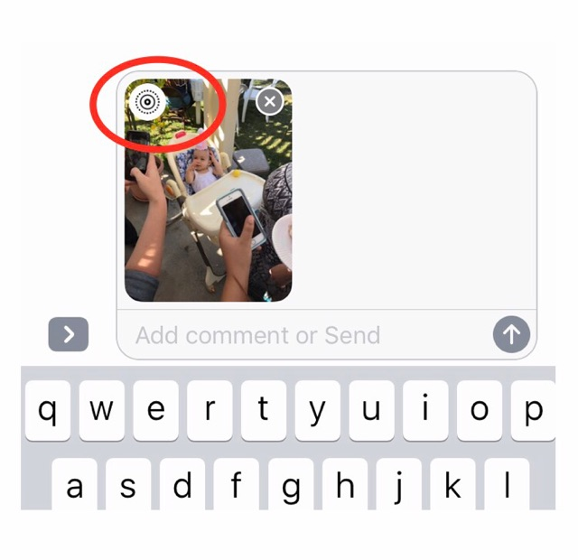
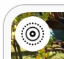
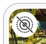

Issue: iOS Live Photos contain sound and 3 seconds of video that you may not want to send to others.
Solution: You can send a still photo from any Live Photo.
- Select the phots you want to send as you normally would.
- Tap the Live Photo icon watermark in the upper left side of the Live Photo.

- You should now see a line through the icon, indicating that the photo will send as a regular still photo and not as a Live Photo.
